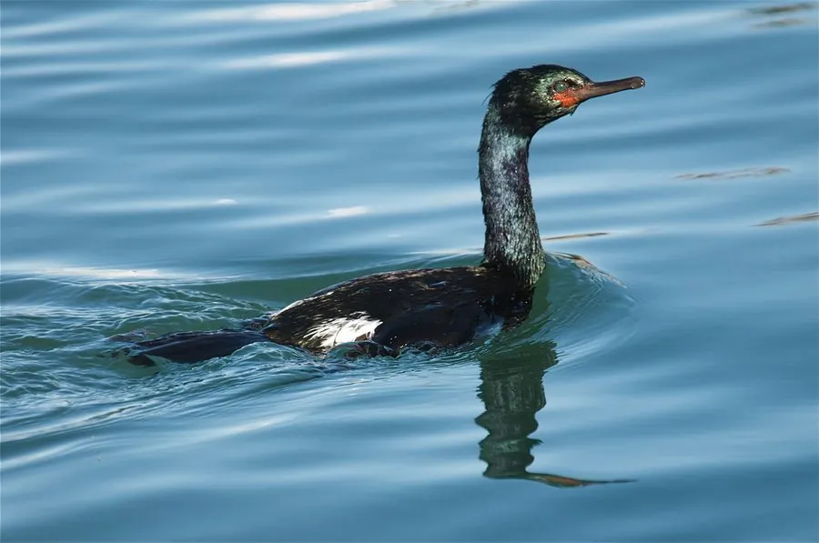

鸟类 · 动物界
海鸬鹚 Phalacrocorax pelagicus

北太平洋海岸的黑色鸬鹚，头上有小羽冠，颈部点缀着白色细羽，善于潜水捕鱼，常成群在岩礁海岸活动。
- 分类
- 门脊索动物门纲鸟纲目鲣鸟目科鸬鹚科属鸬鹚属
- 栖息环境
- 岩礁海岸、海湾与河口，繁殖期在崖壁上集群营巢
- 地理分布
- 北太平洋两岸，中国东北沿海有越冬记录
- 保护级别
- IUCN 无危（LC）；中国国家二级保护动物
物种志
海鸬鹚体长 63–71 cm，体重 1.5–2.4 kg。它的体羽呈黑色并泛蓝绿色光泽，头上有两簇小羽冠，颈部和背部有白色细羽，脸部裸露的皮肤呈暗红色，喙细长带钩。繁殖期羽冠和白色饰羽更加明显。
海鸬鹚分布于北太平洋两岸，从俄罗斯远东、日本到北美西海岸，中国东北沿海有越冬记录。它们栖息在岩礁海岸、海湾和河口，擅长潜水捕鱼，以鱼、虾和甲壳类为食。繁殖期在崖壁和礁石上集群营巢，每窝产卵 3–5 枚，孵化 27–30 天。海鸬鹚在中国被列为国家二级保护动物，全球种群被列为无危物种；它对海洋环境变化较为敏感，可作为海岸生态的指示物种。
形态与习性
- 食性鱼类、虾和甲壳类
- 体长63–71 cm
- 体重1.5–2.4 kg
- 繁殖每窝 3–5 枚卵，孵化 27–30 天
- 特征黑色羽衣配小羽冠，颈部有白色细羽
- 寿命野外约 15 年
趣味知识
- 海鸬鹚头上有两簇小羽冠，颈部点缀着白色细羽。
- 它擅长潜水捕鱼，常在岩礁海岸和海湾中活动。
- 海鸬鹚在中国属于国家二级保护动物，是海岸生态的指示物种。